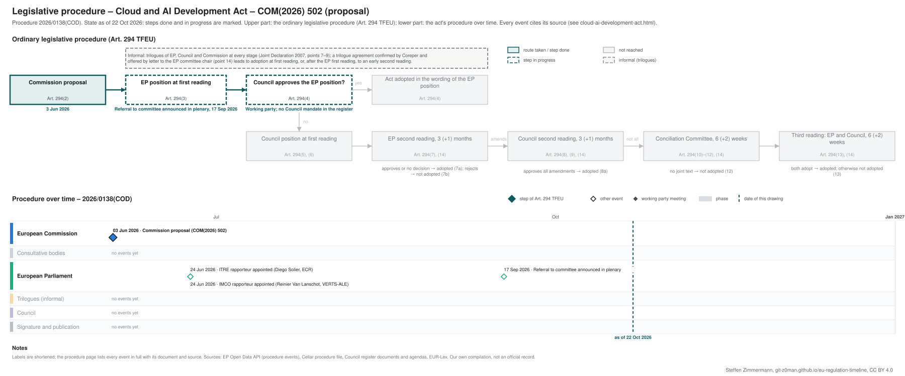

← Regulation timeline › CADA › Legislative procedure · All procedures
Procedure 2026/0138(COD), ongoing, as of 7 Oct 2026. Drawing: SVG · PNG · PDF (A3) · draw.io · Page as Markdown: cloud-ai-development-act.md
| Stage | EP committee stage |
|---|---|
| Parliament | in committee since 17 Sep 2026 |
| Council | working party, latest document 29 Sep 2026 |
| Latest activity | 29 Sep 2026 · Council: Cloud and AI Development Act: Presentation (WK 15040/26) |
| Next steps | EP: rapporteur's draft report; Council: working party towards a negotiating mandate |

| Committee | Role | Rapporteur | Shadow rapporteurs |
|---|---|---|---|
| IMCO Internal Market and Consumer Protection | Responsible (joint committee, Rule 59) | Reinier Van Lanschot (Greens/EFA), appointed 24 Jun 2026 | Adnan Dibrani (S&D), Stefano Cavedagna (ECR) |
| ITRE Industry, Research and Energy | Responsible (joint committee, Rule 59) | Diego Solier (ECR), appointed 24 Jun 2026 | Pilar Del Castillo Vera (EPP), Nicola Zingaretti (S&D), Aleksandar Nikolic (PfE), João Cotrim De Figueiredo (Renew), Alexandra Geese (Greens/EFA) |
| JURI Legal Affairs | Opinion | Sergey Lagodinsky (Greens/EFA), appointed 15 Jul 2026 | Henrik Dahl (EPP), Arash Saeidi (The Left) |
| LIBE Civil Liberties, Justice and Home Affairs | Opinion | Kristian Vigenin (S&D), appointed 30 Sep 2026 | Magdalena Adamowicz (EPP), András László (PfE), Elena Yoncheva (ECR), Veronika Cifrová Ostrihoňová (Renew), Markéta Gregorová (Greens/EFA), Damien Carême (The Left) |
| BUDG Budgets | Budgetary assessment: decided not to give an opinion | – | – |
Source: EP Open Data API (participations) and the Legislative Observatory (joint committee, opinions declined); names link to each Member's page on the EP website. The API names no committee for shadow rapporteurs; they are assigned by the EP's order of participants, which groups each committee.
| Date | Actor | Event | Document | Source |
|---|---|---|---|---|
| 3 Jun 2026 | European Commission | Commission proposal (Art. 294(2) TFEU) | COM(2026) 502 · en.md de.md | Cellar (CELEX 52026PC0502) |
| 24 Jun 2026 | European Parliament | ITRE rapporteur appointed (Diego Solier, ECR) | EP procedure file | EP Open Data API, procedure 2026-0138 (participation RAPPORTEUR) |
| 24 Jun 2026 | European Parliament | IMCO rapporteur appointed (Reinier Van Lanschot, VERTS-ALE) | EP procedure file | EP Open Data API, procedure 2026-0138 (participation RAPPORTEUR) |
| 17 Sep 2026 | European Parliament | Referral to committee announced in plenary | EP procedure file | EP Open Data API, procedure 2026-0138 (REFERRAL) |
Every document the Council register, the EU database of the Parliament of Austria or the EP lists for the procedure, with its state: public documents link to the official file; documents that are not public link to their entry in the Austrian database where there is one (metadata only). Status: public; not public; not public, leak available (an unofficial copy is known to circulate outside the institutions; it is neither published nor quoted here). Released: when a document listed as not public was released, by the date of the Council's public PDF (a technical date) or else the day our daily check found it public.
| Date | Document | Kind | Subject | Status | Released | Text |
|---|---|---|---|---|---|---|
| 4 Jun 2026 | ST 10104/26 | council-transmission | Proposal for a REGULATION OF THE EUROPEAN PARLIAMENT AND OF THE COUNCIL establishing a framework of measures for strengthening Europe's cloud and AI ecosystem … | public | – | – |
| 4 Jun 2026 | ST 10104/26 ADD 1 | council-transmission | ANNEX to the Proposal for a REGULATION OF THE EUROPEAN PARLIAMENT AND OF THE COUNCIL establishing a framework of measures for strengthening Europe's cloud and … | public | – | – |
| 4 Jun 2026 | ST 10104/26 ADD 2 | council-transmission | PART 1/2 COMMISSION STAFF WORKING DOCUMENT IMPACT ASSESSMENT REPORT Accompanying the document Proposal for a REGULATION OF THE EUROPEAN PARLIAMENT AND OF THE … | public | – | – |
| 4 Jun 2026 | ST 10104/26 ADD 4 | council-transmission | COMMISSION STAFF WORKING DOCUMENT EXECUTIVE SUMMARY OF THE IMPACT ASSESSMENT REPORT Accompanying the document Proposal for a REGULATION OF THE EUROPEAN … | public | – | – |
| 4 Jun 2026 | ST 10104/26 ADD 5 | council-transmission | Regulatory Scrutiny Board Opinion | public | – | – |
| 5 Jun 2026 | ST 10104/26 ADD 3 | council-transmission | PART 2/2 COMMISSION STAFF WORKING DOCUMENT IMPACT ASSESSMENT REPORT Accompanying the document Proposal for a REGULATION OF THE EUROPEAN PARLIAMENT AND OF THE … | public | – | – |
| 16 Jun 2026 | WK 8754/26 | council-note | Cloud and AI Development Act (CADA) – Impact Assessment: Presentation | not public* | – | – |
| 16 Jun 2026 | WK 8757/26 | council-note | Claud and AI Development Act (CADA): Presentation | not public* | – | – |
| 7 Jul 2026 | WK 10169/26 | council-note | Cloud and AI Development Act: Presentation | public | – | – |
| 24 Aug 2026 | WK 13042/26 | council-note | EDPS Opinion on the Proposal for a Regulation establishing a framework of measures for strengthening Europe’s cloud and AI ecosystem (Cloud and AI Development … | public | – | – |
| 9 Sep 2026 | WK 13788/26 | council-note | Cloud and AI Development Act: Presentation | public | – | – |
| 22 Sep 2026 | WK 14527/26 | council-note | Cloud and AI Development Act: Presentation | not public* | – | – |
| 28 Sep 2026 | ST 13557/26 | council-note | Optional consultation of the Committee of the Regions | not public* | – | – |
| 28 Sep 2026 | ST 13682/26 | council-note | Opinion of the European Economic and Social Committee (EESC) | public | – | – |
| 29 Sep 2026 | WK 15040/26 | council-note | Cloud and AI Development Act: Presentation | not public* | – | – |
* Not public: the registers are checked again daily until the document is released; last check 9 Oct 2026.
Unofficial Markdown conversions for reading, searching and project folders; only the official document is authentic. "Read" opens the rendered text on GitHub, where a link to a provision (#art-13, #rec-12, #annex-i) jumps to it.
| Date | Stage | Document | Markdown | Read |
|---|---|---|---|---|
| 3 Jun 2026 | com-proposal | CELEX 52026PC0502 | en de | GitHub |